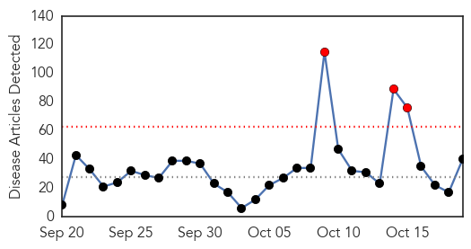
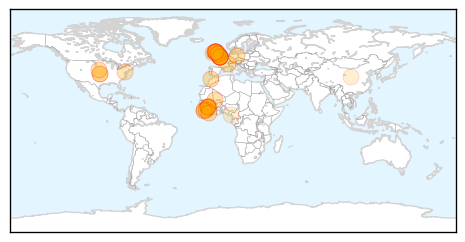
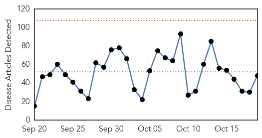
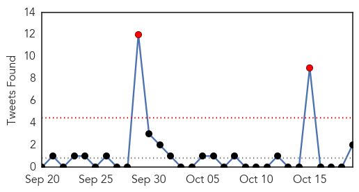
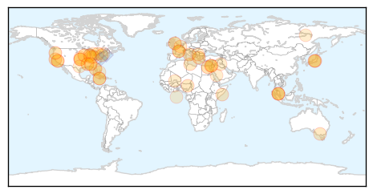

Ebola
30-Day Web Trend
3 alerts, 0 warnings

30-Day Twitter Trend
7 alerts, 0 warnings

Article Locations
Article Confidences

Top Articles:
- 1.000
- Condition of hospitalized Ebola nurse in United Kingdom worsens
- 1.000
- William P.J. Lynch Jr.comWilliam P.J. Lynch Jr.com
- 1.000
- Post-Ebola Syndrome
- 0.999
- UK nurse who survived Ebola may have rare case of relapse
- 0.999
- UK Ebola Nurse 'Critically Ill' as Her Condition Worsens, Says London Hospital
- 0.999
- Ebola: Persistent, and No Visa Required
- 0.996
- Two New Ebola Cases Found In Guinea, Dashing Hopes
- 0.989
- Ebola beds saved 40,000 in Sierra Leone
- 0.986
- Condition of British Ebola Nurse Pauline Cafferkey Improves
- 0.985
- Condition of British Ebola nurse improves
- 0.985
- Scottish nurse who contracted Ebola is now in stable condition
- 0.984
- Ebola nurse's condition 'has improved'
- 0.983
- Scottish Ebola nurse Pauline Cafferkey improves to serious but stable
- 0.980
- Scottish nurse who contracted Ebola is now in stable condition
- 0.980
- Pauline Cafferkey now stable after Ebola relapse left her fighting for life
- 0.979
- Ebola-hit nurse 'critically ill' in London hospital
- 0.977
- Hospital, Others news, Health News, AsiaOne YourHealth
- 0.970
- Handling Medical Waste in an Era of Emerging Pathogens Advice from Expert Facilities
- 0.960
- Staying safe in Liberia with water and soap
- 0.956
- British Ebola nurse's condition improves to serious but stable
- 0.956
- British Ebola nurse's condition improves to serious but stable
- 0.917
- Condition of British Ebola nurse improves
- 0.904
- Ebola nurse Pauline Cafferkey’s condition improves
- 0.888
- British Ebola nurse's condition improves
- 0.874
- Ebola-hit nurse's condition improves
- 0.861
- High Profile APHL Team Explores MOHS Public Health Laboratory Priority Needs
- 0.835
- Lorraine Kelly in ‘Ebola scare’ following contact with stricken nurse
- 0.807
- Ebola worst infectious disease in world, says Ulster Hospital medic
- 0.789
- Ebola nurse Pauline Cafferkey's condition improves to 'serious but stable'
- 0.784
- Scots Ebola nurse no longer critically ill as condition improves
- 0.783
- Ebola nurse condition 'has improved'
- 0.776
- British Ebola Nurse's Condition Improves
- 0.758
- UNICEF Guinea Ebola Situation Report, 14 October 2015 - Guinea
- 0.751
- Ebola nurse Pauline Cafferkey now 'serious but stable' as condition improves
- 0.701
- Pauline Cafferkey's condition improves
- 0.668
- British Ebola nurse Pauline Cafferkey's condition 'has improved' in London hospital
- 0.668
- School of Arts and Sciences: Summer Scholars program provides funding and mentorship for student research projects
- 0.591
- Pauline Cafferkey is winning her battle to live
- 0.560
- UCTH commends FG over intervention
- 0.548
- Sierra Leone News: Salone on the right track of recovery-New Chinese Councellor « Awoko Newspaper
Top Tweets:
- 0.999
- Briefing on the Ebola virus outbreak - http://t.co/dx2Dw72svi ebola
- 0.989
- Ebola nurse is stable after relapse - https://t.co/jfRSk3QcZQ ebola
- 0.988
- Ebola worst infectious disease in world, says Ulster Hospital medic - http://t.co/7suq8hT6CQ ebola
- 0.984
- Ebola - http://t.co/9wLcmhQJyb ebola
- 0.983
- UK nurse who relapsed with Ebola improving - https://t.co/sINarTatiw ebola
- 0.980
- Ebola Nurse Condition Improved To “Stable” - https://t.co/Cwf4Uk1whm ebola
- 0.979
- New Ebola cases positive in Guinea, says WHO - http://t.co/Kuseot5id0 ebola
- 0.979
- Ebola recurrence in Guinea: five new cases reported - http://t.co/euFX5iUYAc ebola
- 0.978
- free credit card with cvv ebola - http://t.co/a94CXXif9Z ebola
- 0.977
- Ebola beds saved 40000 in Sierra Leone - http://t.co/fGMtLJp11B ebola
- 0.970
- Ebola virus can live up to nine months in semen: CDC - http://t.co/JZFBW9prTL ebola
- 0.969
- Relapsed Ebola patient's condition improves, says UK hospital - http://t.co/wQzyFQ4C2f ebola
- 0.969
- Relapsed Ebola patient's condition improves, says UK hospital - CNN International http://t.co/bM9tczfcJG ebola EVD
- 0.960
- Two new cases of Ebola in Guinea - http://t.co/ft0LA2AKy5 ebola
- 0.959
- Condition of British Ebola nurse improves: hospital - Medical Xpress http://t.co/4XEmn2YUFj ebola EVD
- 0.957
- UCTH commends FG over response to Ebola scare - http://t.co/1Ma1d8fivs ebola
- 0.956
- S/Leone claims 21 days Ebola free - http://t.co/J7jGpQUlI5 ebola
- 0.953
- Ebola vaccine impact depends on a strong health system - http://t.co/ZHd1ymxVNU ebola
- 0.951
- 5 New Ebola Cases In Guinea - http://t.co/KeZKUUSvyp ebola
- 0.950
- British Ebola Nurse's Condition Improves - http://t.co/25514zJRka ebola
- 0.949
- 'Totally unprecedented': British nurse suffers from Ebola relapse - ChristianToday http://t.co/K52EneLCzs ebola EVD
- 0.948
- Nurse finds ebola absent on return visit - https://t.co/xaqhIAuWNz ebola
- 0.946
- Recent studies show Ebola virus lingers on in the body, perhaps for ever - http://t.co/ftZiqJklby ebola
- 0.941
- Scottish Nurse Who Contracted Ebola Stable - https://t.co/Yc9StWXYHg ebola
- 0.939
- 'Totally unprecedented': British nurse suffers from Ebola relapse - http://t.co/Wa3SMNyDsX ebola
- 0.935
- Ebola Scare - Calabar Hospital Lauds FG's Quick Intervention - http://t.co/4cfkCwwwyi ebola
- 0.930
- Two New Ebola Cases Found In Guinea, Dashing Hopes - http://t.co/B2I5lflRkh ebola
- 0.930
- Ebola nurse in UK may be rare case of relapse - http://t.co/YrgIGYl0FQ ebola
- 0.929
- United Kingdom: Ebola Nurse critically ill - http://t.co/7P2yejPBm2 ebola
- 0.929
- A case of "reactivated Ebola" has terrifying implications. - http://t.co/vXwkVCna1R ebola
- 0.928
- Scottish Nurse Suffering Ebola Complications Shows Improvement - http://t.co/4kfXvbGd4y ebola
- 0.928
- Novel anti-Ebola drug may safeguard non-human primates - http://t.co/1HUlQXVWWD ebola
- 0.919
- Ebola scare: UCTH commends FG over intervention - http://t.co/nD1OACihSS ebola
- 0.919
- British Ebola nurse's condition improves to serious but stable - http://t.co/EFWIlPTP8q ebola
- 0.919
- British Ebola nurse's condition improves to serious but stable - Reuters UK http://t.co/YZuzZU83lb ebola EVD
- 0.915
- Lorraine Kelly in 'Ebola scare' following contact with stricken nurse - Closer http://t.co/LfjK1S3hnU ebola EVD
- 0.913
- Ugandan Scientist develops a test that detects Ebola in 5 minutes - http://t.co/5Rd9E82KIE ebola
- 0.912
- Ebola may persist in semen for nine months, study shows - https://t.co/XV4BTmKKyG ebola
- 0.909
- Scottish Ebola nurse's condition improved to "serious but stable" - http://t.co/wunAZ5eS2X ebola
- 0.909
- Scots Ebola nurse no longer critically ill as condition improves - http://t.co/4JkD058jez ebola
- 0.909
- Ebola nurse's condition improves at Royal Free - http://t.co/oasZ0YAvPx ebola
- 0.900
- Ugandan scientist develop 5 minute Ebola test kit - GhanaWeb http://t.co/a3mpVJf9Qn ebola EVD
- 0.898
- Condition of Scootish nurse with Achill connections who's being treated for ebola has improved - https://t.co/fXtx8cqfzY ebola
- 0.897
- Lorraine Kelly in 'Ebola scare' - http://t.co/pea0REZAq2 ebola
- 0.897
- Ebola-hit nurse 'critically ill' in London hospital - http://t.co/G0xfr5MMk5 ebola
- 0.896
- New Ebola rapid risk assessment update and... - http://t.co/ZiuXtfo6lO ebola
- 0.891
- Ebola worker: 'I gave up my job as a chartered surveyor to battle the epidemic' - http://t.co/b4FeBearW7 ebola
- 0.890
- Condition of ebola nurse starting to improve - http://t.co/lfrq8jpzXM ebola
- 0.890
- After UK Nurse's Ebola Relapse, Scientists Are Rethinking What We Know - http://t.co/86bypLVesv ebola
- 0.889
- Genome analysis shows Ebola can be sexually transmitted - http://t.co/kx8ngpTwCt ebola
Showing top 50 tweets...
Unknown
30-Day Web Trend
0 alerts, 0 warnings

30-Day Twitter Trend
2 alerts, 0 warnings

Article Locations
Article Confidences

Top Articles:
- 0.994
- The benefits outweigh the risks
- 0.992
- Health Ministry: Thirty-two typhoid cases reported - Nation
- 0.992
- Mississippi Public Broadcasting
- 0.980
- Gators Control Flu Postponed, Alachua County Program Continues
- 0.968
- So what IS the truth about the Lyme disease 'epidemic'?
- 0.966
- Seneca Valley virus cases increase
- 0.949
- Alabama Lyme disease cases drop this year after spike in 2014
- 0.931
- Typhoid fever cases on the rise in Kuala Lumpur – BorneoPost Online
- 0.917
- Chicago Tribune
- 0.917
- Chicago Tribune
- 0.917
- Chicago Tribune
- 0.917
- Chicago Tribune
- 0.917
- Chicago Tribune
- 0.917
- Chicago Tribune
- 0.917
- Chicago Tribune
- 0.917
- Chicago Tribune
- 0.917
- Chicago Tribune
- 0.871
- Take steps to prevent flu from spreading within your household
- 0.811
- Lyme Disease Could Be a Game Changer in the 2016 Election
- 0.810
- Nursing Homes’ Residents Face Health Risks From Antibiotics’ Misuse
- 0.789
- Ook in Italië wordt Godfried 'kardinaal' Danneels nu openlijk beschuldigd van vrijmetselarij, hetgeen zijn automatische excommunicatie zou betekend hebben!
- 0.780
- Cause of new born deaths identified
- 0.773
- Jamaica: Cause of new born deaths identified
- 0.730
- Female suicide bombers strike fleeing villagers in northeast Nigeria
- 0.730
- Libya's recognised parliament rejects UN proposal for unity govt
- 0.730
- Israel summons French envoy over plan for al-Aqsa observers
- 0.730
- Trudeau heir leads the pack as Canada heads to the polls
- 0.727
- Oscar Pistorius leaves jail for house arrest
- 0.723
- The Role of Health Care in State-Building for Somalia
- 0.710
- Long wait for vaccine
- 0.697
- Inherited determinants of Crohn's disease and ulcerative colitis phenotypes: a genetic association study
- 0.666
- Minister of Health Meets with UHWI, MOH and SERHA Team
- 0.664
- Balkans: Thousands of refugees face severe hardship across the region
- 0.603
- Smugglers, jihadists prey on Mali’s rare desert elephants
- 0.603
- Acclaimed Italian writer De Luca cleared in Alps train sabotage case
- 0.603
- British journalist found dead at Istanbul Airport
- 0.580
- Help for Lyme Sufferers
- 0.577
- Ameenah Gurib-Fakim: «Maurice pas assez sensibilisée sur le réchauffement climatique
- 0.573
- New deadly genetic disease in Russia's Yakutia
- 0.569
- Discrimination against dementia-sufferers cause for concern
- 0.556
- Regional Emergency Medicine and Critical Care Travel Network: Caribe EMC2-Net
- 0.550
- Organic Pastures Dairy Recalls Contaminated Raw Whole Milk
- 0.534
- Popular treatment may not be the most reliable
- 0.530
- Cancers ignite fears in Ware County residents
- 0.527
- Q&A With Joshua Petrie From University of Michigan School of Public Health
- 0.521
- Military trainings kicks in at movie theater
- 0.511
- American Experience: The Forgotten Plague
- 0.504
- Popular treatment may not be the most reliable
Top Tweets:
- 0.688
- Flu Fact 1: You cannot get the flu from the flu vaccine http://t.co/ckzwgX1QIR What’s stopping YOU from getting your fluvax
- 0.539
- RT: Since that day nearly 9,000 Haitians have died of the disease. It was traced back to that very UN base, a fact the UN has …
- 0.512
- More than 109 million doses of flu vaccine have already been distributed this season. Find a fluvax: https://t.co/eQdndy7fSH